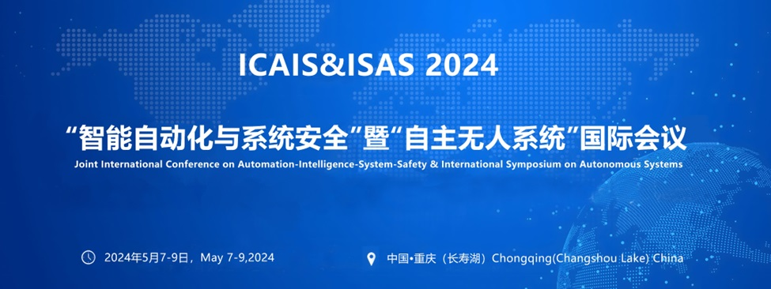

This session aims to provide a platform for researchers and engineers from machine learning, automation-intelligence to communicate the development of machine learning theory and their applications especially related to automation-intelligence.
Topics of interest will be focused on, but not limited to:
- Supervised and unsupervised learning methods (including classification, regression, clustering, representation learning, etc.)
- Semi-supervised learning, Ensemble methods, Multi-view learning, Multi-task learning, Multi-source learning, Multi-label learning, Multi-instance learning, Transfer learning,
- Generative model (Variational autoencoder, Generative Adversarial Network, Diffusion Models), Deep learning methods (Convolutional Neural Network, Graph Neural Networks, Long Short-Term Memory, Transformer)
- Natural language processing (GPT, question answering, machine translation)
- Computer vision(Human Activity Recognition, Human Pose Estimation, Object detection, Image Segmentation)
- Speech processing and Multi-modal learning
Paper requirements:
Papers must be original and unpublished. Simultaneous submissions are strictly prohibited.
Papers must be written strictly according to the template provided on the conference website.
For detailed information, please refer to
"http://www.isas.cqu.edu.cn/info/1015/1009.htm"
Important dates:
- September 17, 2022: Workshop papers submission
- October 8, 2022: Notification of workshop papers acceptance to authors
- October 10, 2022: Camera-ready deadline and copyright form
- October 10, 2022: Early bird registration finishes
- November 28-December 1, 2022: Workshops date
All dates are 11:59pm Pacific Daylight Time.
Organizers:
- Shiliang Sun, Department of Automation, Shanghai Jiao Tong University
- Guoqing Chao, Schoolof Computer Science and Technology, Harbin Institute of Technology
- Xijiong Xie, School of Information Science and Engineering, Ningbo University